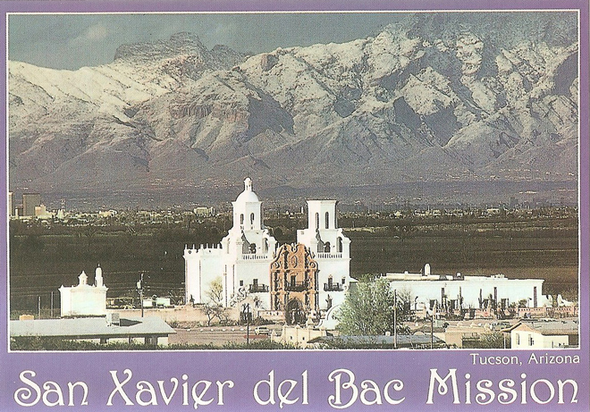
.
Mission San Xavier del Bac is a historic Spanish Catholic mission located about 10 miles (16 km) south of downtown Tucson, Arizona. The mission was founded in 1692 by Padre Eusebio Kino in the centre of a centuries-old Indian settlement of the Sobaipuri O'odham, located along the banks of the Santa Cruz River. The mission was named for Francis Xavier, a Christian missionary and co-founder of the Society of Jesus (Jesuits) in Europe. The original church was built to the north of the present Franciscan church. This northern church or churches served the mission until being razed during an Apache raid in 1770.
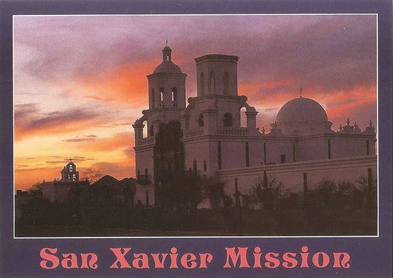
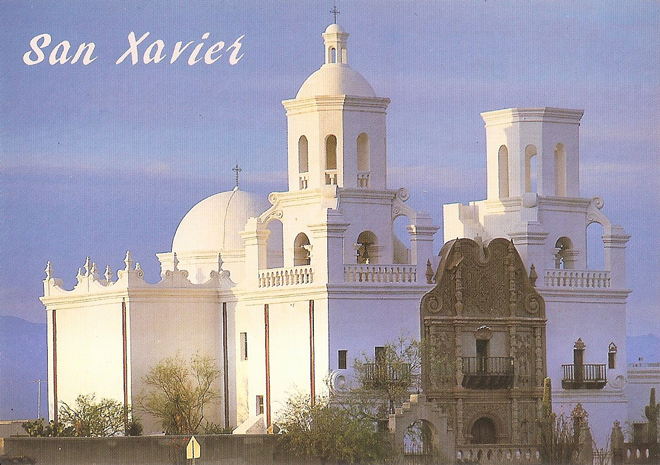
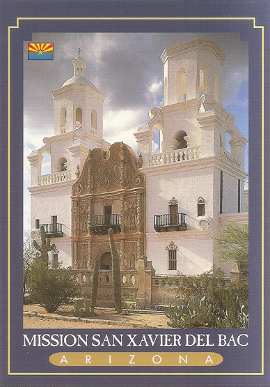
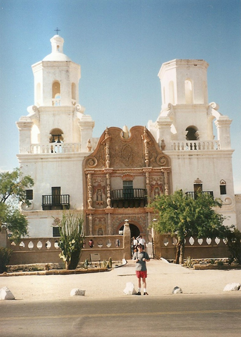
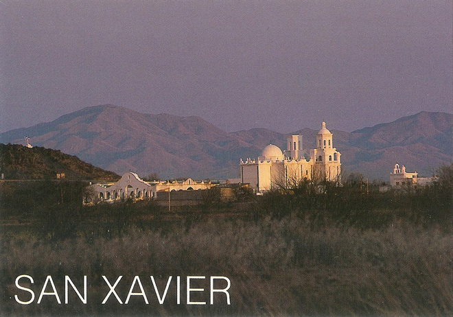
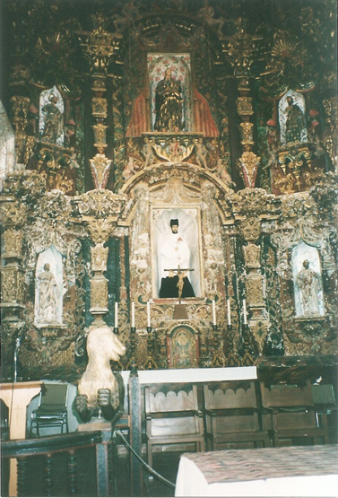
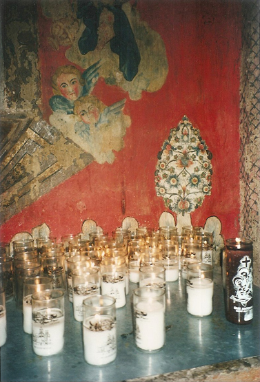
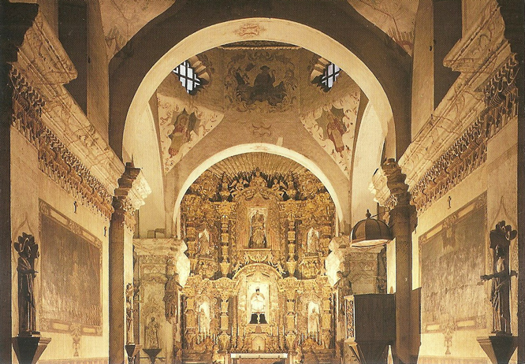
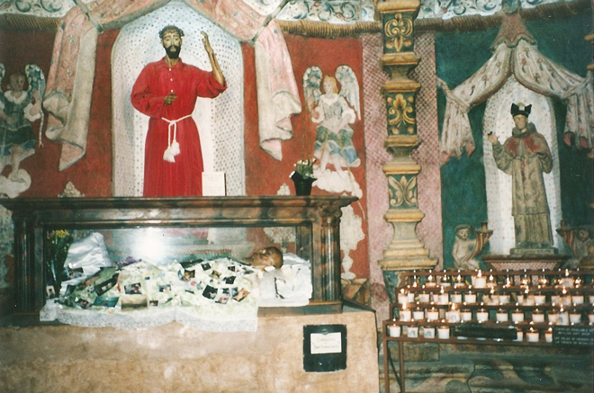
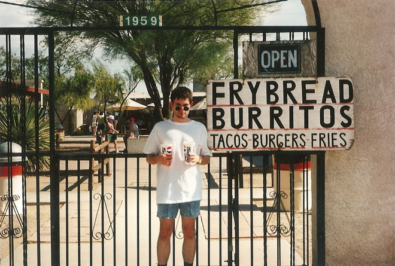
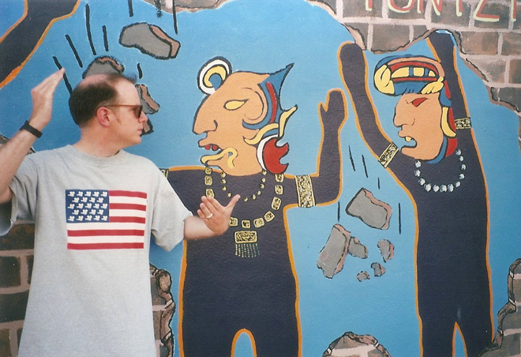
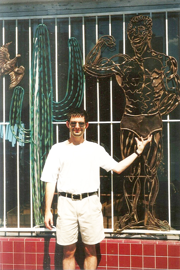